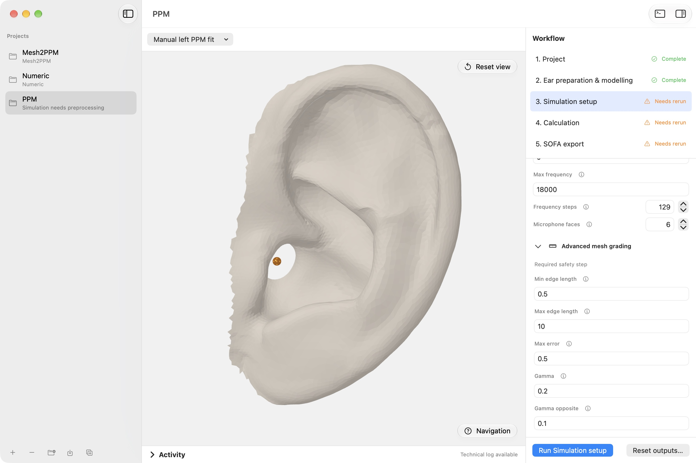
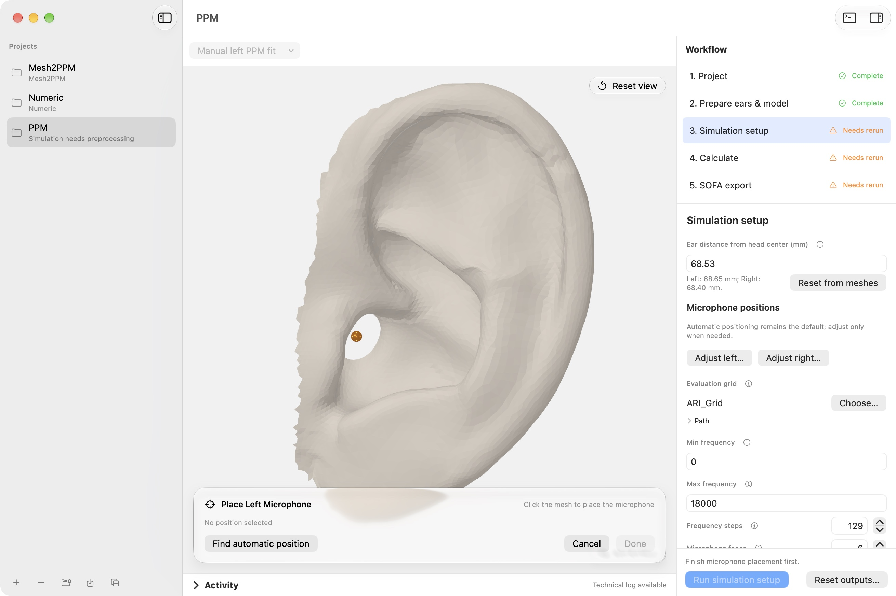
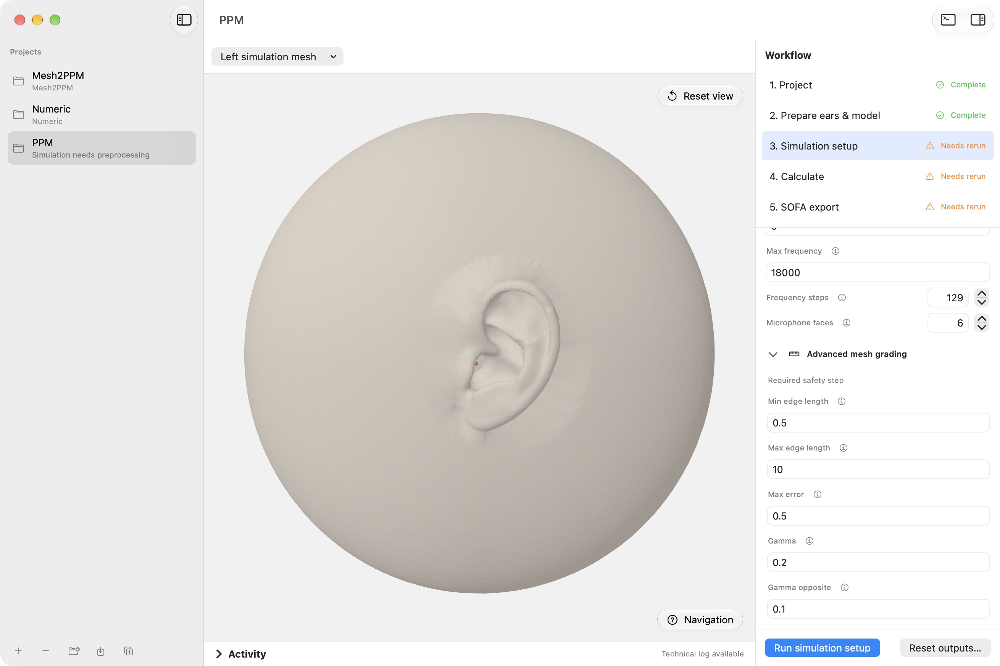
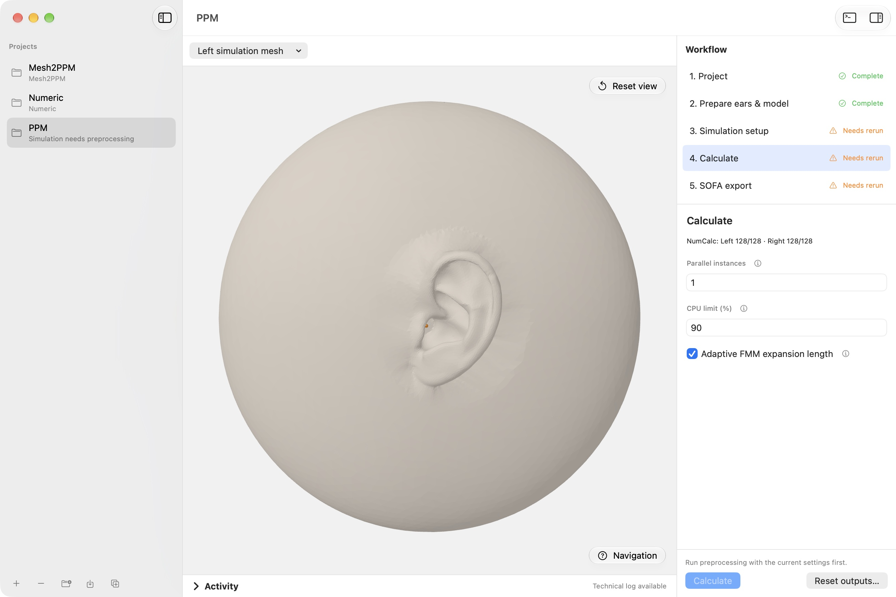
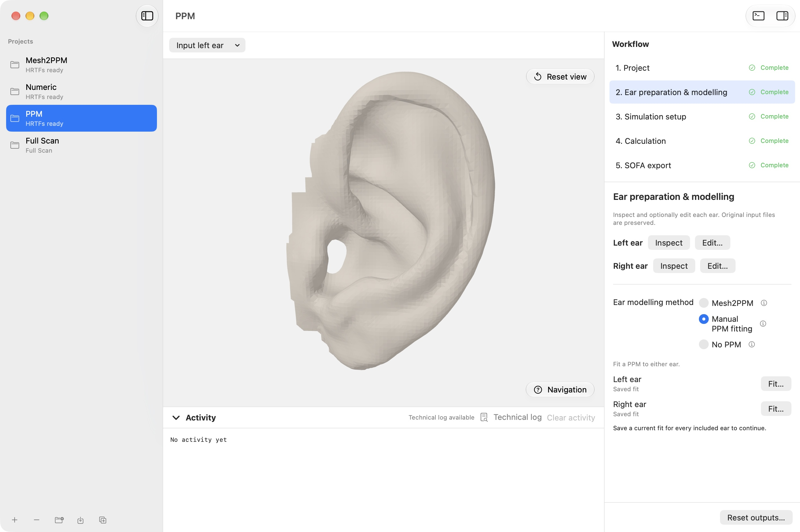
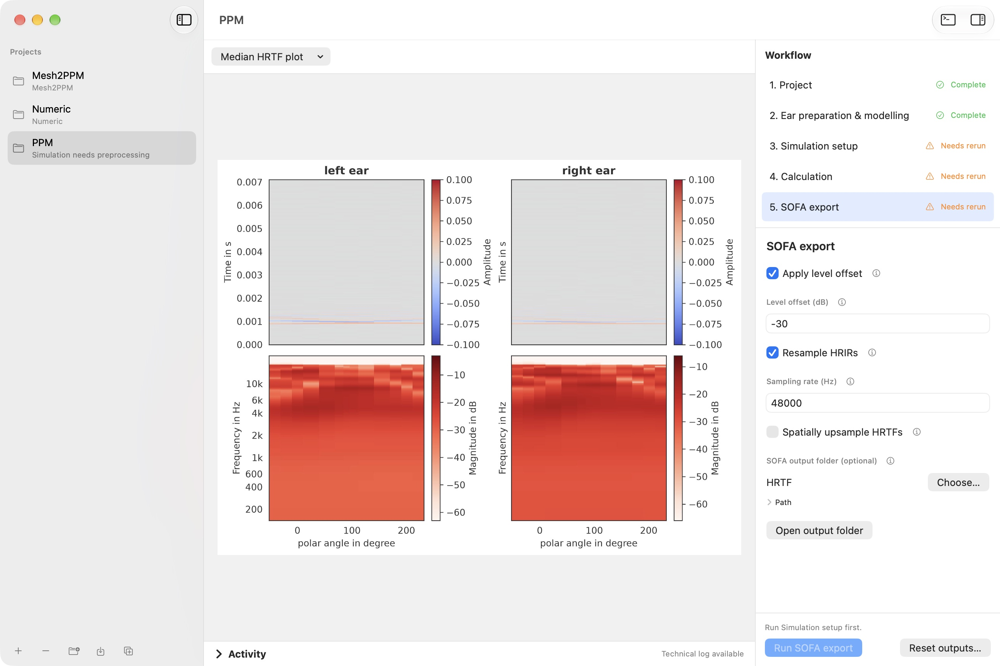
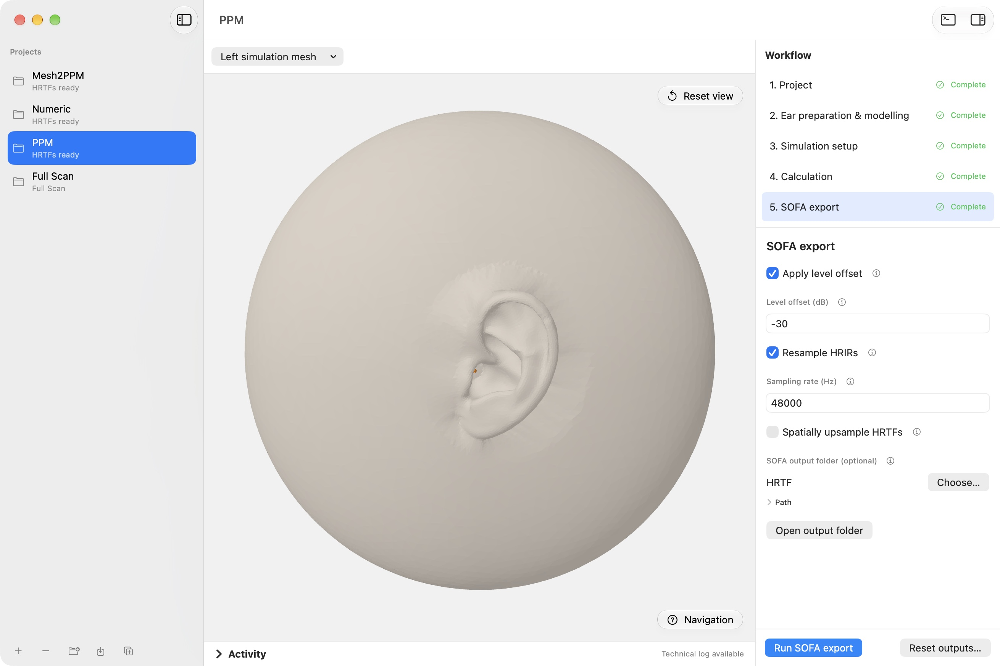

Simulation and results
Check the simulation geometry, place the microphones, follow the solver, and look at the acoustic results before you export them.
Written for version 2.0. The current download is v1.1.0, so a few things may look different in your copy.
Check simulation settings
In Project Settings, expand Mesh2HRTF to choose an evaluation grid, ear distance from head center, frequency range, frequency steps, and number of microphone faces. Mesh Grading controls edge lengths and grading parameters. Prepare and inspect the geometry before starting a long simulation.



Place microphones
Use Pipeline → Place Left Microphone or Place Right Microphone. Click a point on the surface or use the automatic position, then confirm with Done. Drag to rotate the view; Escape cancels placement. Review each side before continuing.


Run and monitor
The pipeline panel shows the status of each stage. Use Run Next Step or select an individual stage from Pipeline → Run Stage. NumCalc settings include parallel instances, CPU limit, and the adaptive fast multipole method (FMM) expansion length. Open the live log for progress and the technical log for detailed diagnostics. Use Stop to interrupt a run.






Explore pressure fields
When solver results are available, choose a pressure result from Preview. Select the frequency, surface, and quantity: Level, Magnitude, Phase, Real, or Imaginary. The legend reports the current scale and units.
Lock color scale keeps the displayed range when switching frequencies. Refresh reloads available results. These are raw NumCalc pressures, before SOFA normalization.

View HRTF plots
Choose an available horizontal or median HRTF plot from Preview. The available plots depend on the files the project has generated. Refresh project files if new results are missing.



Export and process SOFA
Expand Postprocessing to choose an output folder, normalization and level offset, HRIR resampling, and spatial HRTF upsampling. Resampling changes the sample rate; spatial upsampling adds source directions while retaining the sample rate and HRIR length.
Spatial upsampling has its own subdivision level and normalization setting. Its files go to Upsampled/, next to the original exports.


Manage projects and outputs
Use sidebar folders to group projects. Duplicate a project to keep a separate version with its results. When removing a project, check the confirmation: the app may offer to move its folder to Trash or the Recycle Bin. Imported and protected folders remain on disk. Reset Outputs deletes generated outputs but keeps inputs and manual work; back up results you need first.